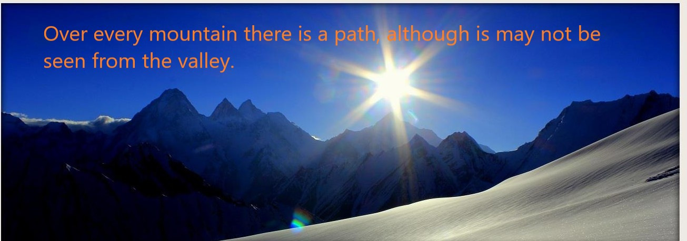
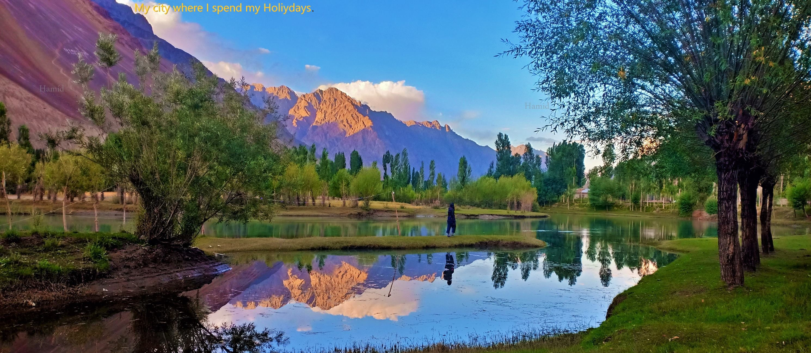

Explore from anywhere
Virtual Trips
Choose a destination to preview its sample tour. Replace the sample stops and media with your own content.
Skardu
Sample gallery using the Skardu photos already in the site. Replace the photos, captions, and stops whenever you are ready.
 Sample Skardu view
Sample Skardu view

Sample mountain scenery

Sample destination scenery
Sample route
- Stop 1: Add your starting point and a short description.
- Stop 2: Add a landmark, lake, or viewpoint.
- Stop 3: Add the final stop and travel notes.
Request this virtual trip
Gilgit
Sample tour page. Replace the route, descriptions, and photos below with your own Gilgit content.
Sample route
- Stop 1: Add your starting point and a short description.
- Stop 2: Add a landmark, market, or viewpoint.
- Stop 3: Add the final stop and travel notes.
Request this virtual trip
Hunza
Sample tour page. Replace the route, descriptions, and photos below with your own Hunza content.
Sample route
- Stop 1: Add your starting point and a short description.
- Stop 2: Add a landmark, lake, or viewpoint.
- Stop 3: Add the final stop and travel notes.
Request this virtual trip
Swat
Sample tour page. Replace the route, descriptions, and photos below with your own Swat content.
Sample route
- Stop 1: Add your starting point and a short description.
- Stop 2: Add a landmark, river, or viewpoint.
- Stop 3: Add the final stop and travel notes.
Request this virtual trip